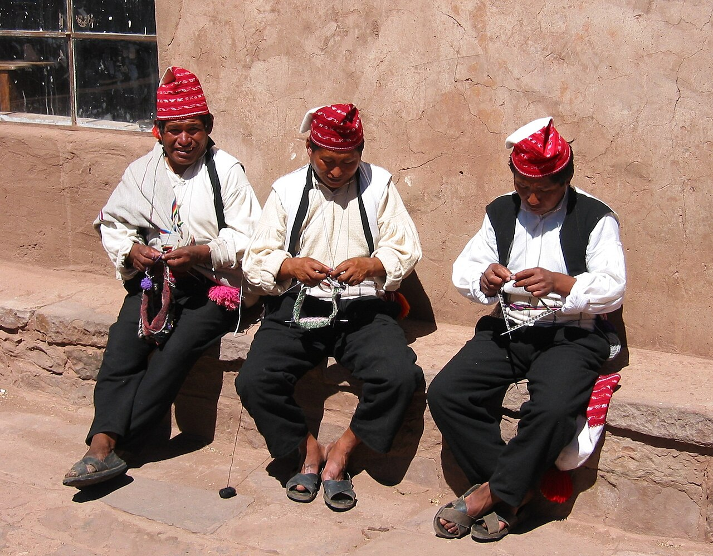
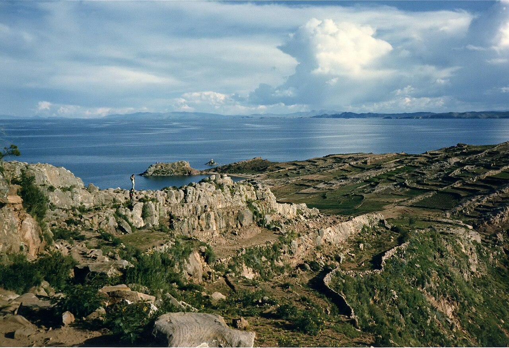
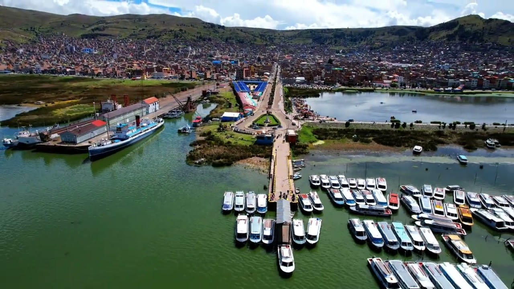

Conocer el arte textil
Los hombres tejen los chullos y las mujeres elaboran fajas y prendas en telar. Los colores y diseños del chullo comunican información sobre quien lo lleva.
Lo más representativo de la isla

Taquile es una isla del lago Titicaca ubicada frente a la ciudad de Puno. Sus habitantes hablan quechua y mantienen una organización comunitaria propia, que incluye el manejo del turismo dentro de la isla.
Su arte textil fue reconocido por la UNESCO en 2005 como Obra Maestra del Patrimonio Oral e Intangible de la Humanidad.

Los hombres tejen los chullos y las mujeres elaboran fajas y prendas en telar. Los colores y diseños del chullo comunican información sobre quien lo lleva.
Lo más representativo de la isla

Desde el puerto se sube por escalinatas de piedra hasta la plaza, con vistas abiertas al lago y a las islas cercanas.
Recomendado llevar agua y protector solar
Los restaurantes comunales ofrecen platos con productos de la zona, como la trucha del lago y la sopa de quinua.
Menú sencillo y preparado en la isla
Se llega en bote desde el puerto de la ciudad de Puno. El viaje dura entre una hora y media y tres horas, según el tipo de embarcación.
